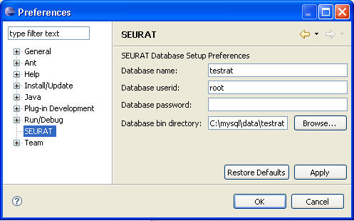

Preferences
Once you are running SEURAT, you can set the preferences(Windows--Preferences)
to point to the appropriate database and to provide the userid and password you
wish to use with your MySQL installation as well as the database bin directory.
(See the following figure)
